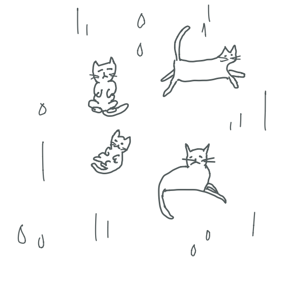
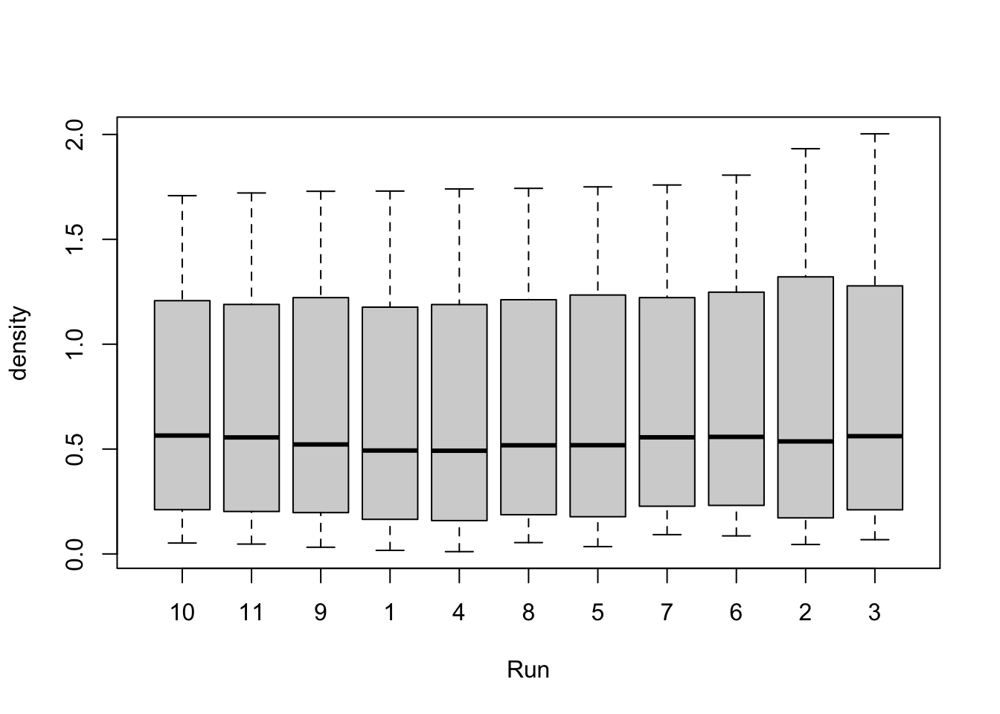

1 Introduction to Statistics
1.1 Statistics
Researchers in the life sciences analyze data that exhibit variability. For example, patients given the same treatment may respond differently; PCR (Polymerase Chain Reaction) assays prepared identically may yield different results due to contamination, thermal damage, etc. The challenge for the life scientist is to discern the signal from the noise.
Statistics is the science of understanding data (collection, analysis, and presentation) and of making decisions in the face of variability and uncertainty. Statistics is a core component of data science.

What can we conclude?
High-quality samples are essential for sound science, even in the age of AI!
Our ability to obtain reliable estimates of population quantities of interest, and to assess uncertainty, depends on how we sample populations. It is often at this early step in an investigation that the fate of a study is sealed, for better or worse.

In most situations, we do not observe the whole population. Instead, we obtain a sample. We need to ask ourselves: what do we want to do with the data? If our goal is to describe the sample data, we compute descriptive statistics and perform an Exploratory Data Analysis (EDA).

If instead we want to make statements about the whole population, then beyond EDA we do statistical inference.

1.2 Data
Your dataset (tabular data) is a collection of variables and observations—typically, one observation per row and one variable per column—filled in with values. A variable is a characteristic or quantity that you can measure; we will denote variables with capital letters X, Y, etc. A value is the state of the variable when you measure it; we will use lowercase letters (e.g., x, y) for values. An observation is a set of measurements from one unit (e.g., one person or one animal).
In the cats example, X = number of injuries is a variable, while x = 2 is one particular value. Similarly, Y = number of floors (stories) fallen is a variable, while y = 5 is a particular value. An observation is the data collected for a particular cat, e.g., Luna fell from the fifth floor, resulting in 2 injuries.
Variables can be categorical or numerical. Categorical variables indicate membership or attributes. Categorical variables whose categories can be ranked in a meaningful order are called ordinal. Examples include blood type (A, B, AB, O), survival status (alive or dead), and language. Numerical variables record the amount of something, for example body temperature, age, or number of friends. Numerical values can be discrete (number of friends) or continuous (body temperature).
The most common languages used for analyzing data are SAS, R (and Bioconductor), and Python. In this course, we will use R with datasets in the form of data frames or tibbles.
Let’s generate some data by answering this poll.

We can now read our dataset (poll results).
#library(readr)
#url <- "https://raw.github.com/JuliaPalacios/stats141_2026/data/file1.csv"
#survey <- read_csv(url)
#survey
library(palmerpenguins)
penguins# A tibble: 344 × 8
species island bill_length_mm bill_depth_mm flipper_length_mm body_mass_g
<fct> <fct> <dbl> <dbl> <int> <int>
1 Adelie Torgersen 39.1 18.7 181 3750
2 Adelie Torgersen 39.5 17.4 186 3800
3 Adelie Torgersen 40.3 18 195 3250
4 Adelie Torgersen NA NA NA NA
5 Adelie Torgersen 36.7 19.3 193 3450
6 Adelie Torgersen 39.3 20.6 190 3650
7 Adelie Torgersen 38.9 17.8 181 3625
8 Adelie Torgersen 39.2 19.6 195 4675
9 Adelie Torgersen 34.1 18.1 193 3475
10 Adelie Torgersen 42 20.2 190 4250
# ℹ 334 more rows
# ℹ 2 more variables: sex <fct>, year <int>A first step is to explore the data and describe them in summary form. Common checks include:
- Measures of center and measures of dispersion
- Checking for missing values (e.g., “NAs”)
- Plotting data, frequency distributions, and charts
- Talking with the person who collected the data (review the data dictionary)
summary(penguins$species) Adelie Chinstrap Gentoo
152 68 124 summary(penguins$flipper_length_mm) Min. 1st Qu. Median Mean 3rd Qu. Max. NA's
172.0 190.0 197.0 200.9 213.0 231.0 2 #mean(penguins$flipper_length_mm, na.rm = TRUE) #ignore NAMeasures of center (or typical value):
- Sample mean (average): (\(\bar{x} = \frac{1}{n}\sum_{i=1}^{n} x_i\))
- Median: the value that lies in the middle of the ordered sample
- Mode: the value (or values) that occurs most frequently in a dataset
Measures of dispersion:
- Range: max − min
- Interquartile range (IQR): the spread of (roughly) the middle 50% of the observations
- Deviation: \(y_i - \bar{y}\)
- Sample standard deviation: \(s=\sqrt{\frac{\sum^{n}_{i=1}(y_{i}-\bar{y})^2}{n-1}})\)
- Sample variance: \(s^2\)
- Coefficient of variation: cv=\(\frac{s \times 100\%}{\bar{y}}\)
ImportantWhy (n-1) in the standard deviation?
Note that the sum of deviations (y_i-{y}) is always zero. This means that, in a sample of (n) observations, there are only (n-1) independent pieces of information about the deviations from the average. The quantity (n-1) is called the degrees of freedom of the standard deviation (and the variance).
1.3 Plotting the data
We will start with a scatter plot.
A scatter plot is a tool for examining the relationship between two numerical variables (X) and (Y). It plots each observed ((x,y)) pair as a dot on the (x)-(y) plane.
?DNase #what is the dataset about?
head(DNase) #shows the first rows Run conc density
1 1 0.04882812 0.017
2 1 0.04882812 0.018
3 1 0.19531250 0.121
4 1 0.19531250 0.124
5 1 0.39062500 0.206
6 1 0.39062500 0.215names(DNase) # gives you the name of the variables[1] "Run" "conc" "density"plot(DNase$conc, DNase$density,
ylab = attr(DNase, "labels")$y,
xlab = paste(attr(DNase, "labels")$x, attr(DNase, "units")$x),
pch = 3)
We can visualize frequency distributions with bar plots (as well as jittered dotplots), histograms, and boxplots. Bar plots and histograms display the frequency of values (or grouped values). A boxplot displays the minimum, 1st quartile, median, 3rd quartile, and maximum at once. We can also compare multiple distributions at once.
hist(DNase$density, breaks=25, main = "",xlab="Density")
boxplot(density ~ Run, data = DNase)
The shape of a distribution is often informative. It may be, for example: (a) symmetric and bell-shaped, (b) symmetric but not bell-shaped, (c) right-skewed, (d) left-skewed, (e) exponential, or (f) bimodal.
Base R plotting functions are good for quick exploration, but they have aesthetic limitations. We will use a framework called the grammar of graphics, implemented in the package ggplot2.